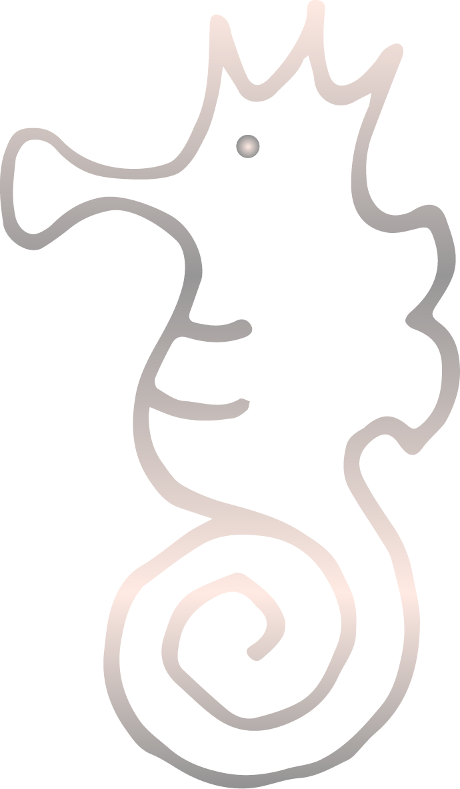
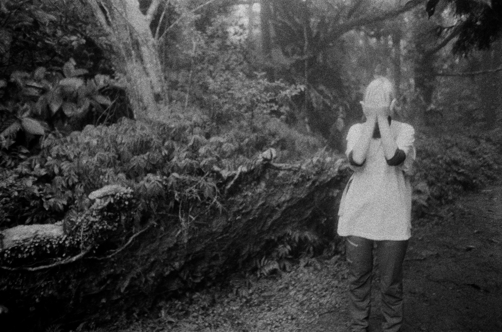
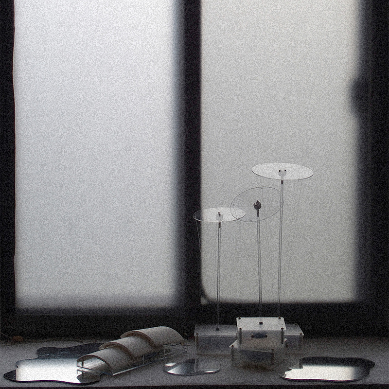
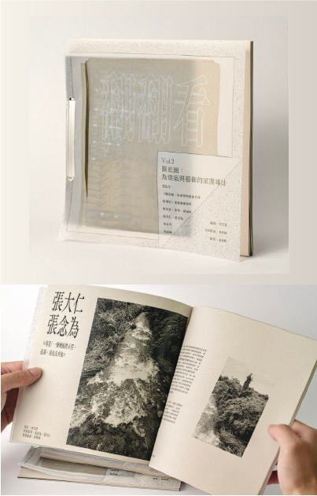

Rain Season interacts with raindrops. Consisting of two digital devices and one analog device, this work puts rainy days in a new perspective. The concept behind it is to reveal the mysteries of rain.
Raindrops fall on flowers and roof tiles, and into puddles. Respectively, this reflects the movements raindrops can cause, and sounds they can create, and the appearance they can have. As raindrops drip, what do they dream and where do they feel like going?
媒材：雷切壓克力、金屬零件、Arduino板、伺服馬達、水位感測器、小喇叭
fertile Rain Season 完整作品頁面......


Rain Season

委託製作
此裝置是聲音藝術家吳道勳的作品〈山霧之河〉中的一部分，作品以藝術家的聲音演出為主體，同時使用煙機、燈光等裝置操控⋯⋯，在音樂鋪陳下，使環境中的光影隨之變幻。
委外製作裝置軟硬體
媒材：雷切壓克力、金屬零件、Arduino板、馬達...。

翻翻看
2022年初我離開從小成長的城市，來到台南工作，扎根未穩的生活使我常對舊生活與未來感到焦慮;由焦慮梳理而出的疑問，間接轉向身旁一群徘徊於以創作求生存的朋友們，我們都叫他們業餘愛好者。
我喜歡做小誌的過程，從面對面談話、蒐集整理資料、刊物排版、紙質選擇與印刷...，環節中滿是選擇，與細節上的微小安排。
《翻翻看》Vol.1-業餘愛好者
《翻翻看》Vol.2-圖底圖:為建築與藝術的家園尋址
此冊為策展人曾哲偉邀請策劃，採訪展覽《圖底圖：為建築與藝術的家》中的五位藝術家之創作心路歷程。
November. 3~5 號 來業餘愛好者找我們玩～翻翻翻翻看：〉
fertile
2023 Taipei Art Book Fair...
fertile
去鼴鼠買一本～
周艾萱 CHOUCHOU
- 2016.09 -2020.06 實踐大學媒體傳達設計學系 畢業
- 2019.01 -2019.06 波蘭波茲南藝術大學 交換學生計畫
- 2018. 第九屆 Open HCI 人機互動工作坊 學員
- 2019. 泰國朱拉隆功大學 新媒體互動工作營 學員
經歷 |Experience|
- 2023 宏騏印刷設計
- 2020.09 -2021.12 吳季璁工作室 藝術行政助理
- 2021.07 -2021.12 Tsai-Yoshikawa 旅英藝術家雙人組 專案行政
- 2020.07-2020.09 TCAC 台北當代藝術中心 夏季實習生
- 2022 / 2020 草率季 參展
- 2019 Mar/Apr 互動裝置 Rain Season 受美國電腦協會互動雜誌採訪(ACM Interac- tions magazine, XXXV-2 How was it made)
- 2019 Jan/Feb 互動裝置 Rain Season 獲刊於美國電腦協會互動雜誌 Demohour 專欄(ACM Interactions magazine, XXXV-1 Demohour) fertile